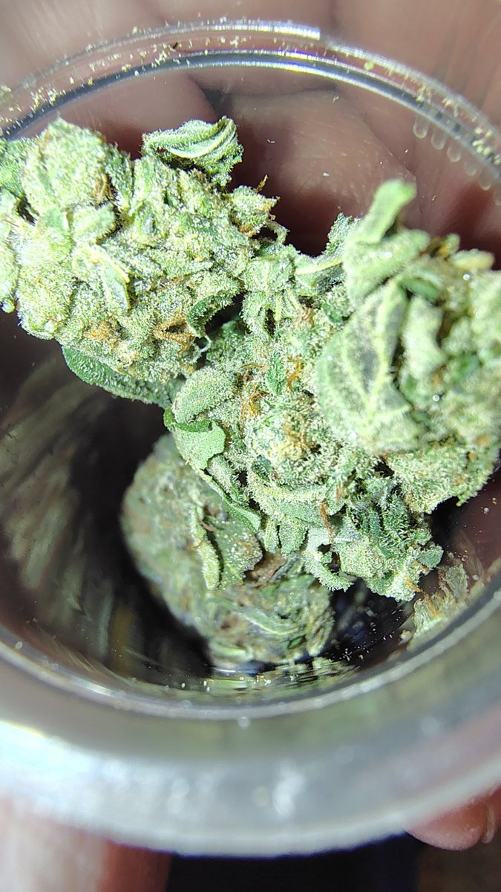

Get the week's cannabis industry news in your inbox. Type your email below to sign up for the news letter.
No spam, just the news. You can unsubscribe anytime.
Trichome Zone covers the whole marijuana industry — US policy & regulation, business & markets, international news, and science & health. Ads do not need to be cannabis-specific: general products and services that fit our readers are welcome.
The first thing every reader sees, at the top of the news feed.
A featured placement right under the day's top story.
Native-style slots woven through the news feed as readers scroll.
Pricing is a flat monthly rate, quoted per placement after you get in touch — no invented traffic numbers, just a straight quote for the spot you want.
📧 Sponsor contact: sean.ofriel@aol.com
Email an inquiry →● Account connected — Publisher ID ca-pub-5355312476298022 is baked into this Cloudflare version, and Google's AdSense script is in the page head.
Still needed for real ads to show:
google.com, pub-5355312476298022, DIRECT, f08c47fec0942fa0
This page is the whole website — one file, no build step.
Put both files together in one folder. That's your entire site.
index.html and ads.txt.trichome-zone.pages.dev address within a minute — check the site looks right there first.trichomezone.com. Do the same for www.trichomezone.com.https://trichomezone.com/ads.txt opens in a browser — you should see the one Google line.Stuck on any step? Tell Edison which step and what the screen says, and you'll get walked through it.
By Sean O'Friel, Trichome Zone — November 5, 2026 · Original Article
On December 11, 2026, the federal definition of hemp changes. That date is on the countdown at the top of this site for a reason — it is not just a hemp story. It is a marijuana industry story, because hemp and marijuana are not two separate worlds. They share farmers, processors, shops, customers, and investors. When one side gets cut off, the other side feels it.
Congress rewrote the definition of hemp in Section 781 of the spending bill signed in November 2025. Three changes matter most: total THC, not just delta-9 THC — THCA and other THC variants now count toward the 0.3% limit; a 0.4 mg cap per container — not per serving, per entire container, which the U.S. Hemp Roundtable estimates about 95% of existing hemp-derived cannabinoid products exceed, including most full-spectrum CBD products; and converted cannabinoids are out — cannabinoids made by converting CBD, most delta-8 THC for example, are excluded entirely. Converted cannabinoids already lost federal hemp status on November 12, 2026. Naturally occurring cannabinoids follow on December 11, 2026.
Full-spectrum CBD tinctures, sleep aids, and wellness products — bought by people who do not think of themselves as THC consumers at all — mostly exceed 0.4 mg of total THC per container. CBD isolate and broad-spectrum CBD, which typically have undetectable THC, are in a much better position. Full-spectrum brands will have to reformulate, switch to isolate, or stop selling — and many small brands will not have the money or time to do either. When those products disappear, it is not just a brand that closes. It is the shop that sold them, the distributor that moved them, and the farmer who grew the hemp.
Hemp farmers grew for this market. If hemp flower can no longer qualify as hemp because of total THC, that crop effectively becomes marijuana under federal law, which cannot be sold outside licensed dispensaries in legal states. That leaves farmers with fewer legal buyers, crops they cannot move across state lines the way hemp could move, and contracts that no longer make sense. Some will switch crops. Some will try to move into the licensed marijuana market, where licensing is expensive and limited. Some will stop growing cannabis altogether.
On paper, licensed marijuana companies benefit. The hemp products that competed with them in gas stations, smoke shops, and online — THCA flower, delta-8 gummies, hemp-derived THC drinks — are being pulled from those shelves. Customers who want THC will have to go to a licensed dispensary instead. But it is not a clean win. Dispensaries in states like New York also rely on the same supply chain, the same testing labs, the same packaging suppliers, and often the same customers. When hemp processors and labs close, licensed operators lose suppliers too.
Hemp-derived THC beverages became a lifeline for breweries in a declining beer market. Those drinks, at 2.5–10 mg per can, are far above the new 0.4 mg per-container cap. When the ban takes effect, that revenue disappears overnight. In Minnesota alone, THC beverages are an estimated 20–30% of revenue for many breweries, and industry experts estimate 20–30% of affected Minnesota breweries could shut down. The same pattern applies in Texas, Louisiana, Ohio, Washington, Tennessee, and other states. Lenders feel it too: loans secured by real estate, production facilities, inventory, and equipment tied to THC product lines lose value when the product line itself becomes federally unlawful.
People who use these products for sleep, pain, relaxation, or as an alternative to alcohol will not stop wanting them because a definition changed. If legal, regulated supply goes away, that demand does not vanish. It moves — to licensed dispensaries where they exist, to other states, or to unregulated sellers where they do not. That is why this is not just a hemp story. A ban that was sold as closing a loophole is also a test of how durable cannabis legalization actually is, and how much of the industry depends on a federal definition that can change in a spending bill.
December 11, 2026 — the main deadline for naturally occurring cannabinoids. State responses — states are already writing their own hemp rules, and the state patchwork will decide what can still be sold where. Court and Congress — industry groups are pushing for a durable federal framework, including the Lawful Hemp Protection Act. New York — with 757 licensed adult-use dispensaries and $512.6M in Q3 sales, New York is one of the states where the shift from hemp shops to licensed dispensaries will be most visible.
Sources: U.S. Hemp Roundtable estimates; Section 781, H.R. 5371; H.R. 6500 delay to December 11, 2026; High Times, ProCannabis, JD Supra reporting on the federal hemp redefinition. This article is news and analysis, not legal advice.
By Sean O'Friel, Trichome Zone — November 6, 2026 · Original Article

On March 31, 2021, New York passed the Marihuana Regulation and Taxation Act — the MRTA — and promised something no other state had really tried at that scale: legal cannabis built around justice first. Not just legal weed, but a market that would repair the damage of prohibition, give the first licences to the people prohibition hurt most, and send tax money back into the communities that had been policed the hardest. Five and a half years later, that promise is still only half kept. The legal market is finally big, finally growing fast, and finally in most parts of the state — and it is still, in too many ways, the market New York warned itself not to build.
This is the whole story so far: how it started, where it went wrong, what is actually working now, and what has to change next. And because New York is my home, and because December 11, 2026 is now less than five weeks away, there is a hemp chapter too — because New York's hemp rules are about to collide with a federal hemp redefinition, and a lot of New York shops, farmers, and drink makers are going to feel it.
The MRTA was, on paper, one of the most progressive cannabis laws in America. It legalised adult-use cannabis for people 21 and over, created the Office of Cannabis Management (OCM) and the Cannabis Control Board to run it, and set a goal that half of all licences — 50% — would go to social and economic equity applicants. It created a Community Grants Reinvestment Fund, with 40% of cannabis tax revenue earmarked for communities disproportionately impacted by prohibition. And it sealed or expunged more than 800,000 marijuana-related convictions — a real, human result that mattered before a single legal sale ever happened.
The idea was simple and, at the time, radical: the people who had been arrested for cannabis should be the first people allowed to sell it legally. The first retail licences, the Conditional Adult-Use Retail Dispensary (CAURD) licences, were reserved for justice-involved New Yorkers and their families. The state even promised a $200 million Cannabis Social Equity Investment Fund to lease and fit out storefronts for the first 150 CAURD dispensaries. That was the deal. The rollout is the story of how hard that deal turned out to be to keep.
The first legal sale did not happen until December 29, 2022 — almost 21 months after legalisation — at Housing Works Cannabis in Manhattan. And then, for a long time, almost nothing happened. By January 2024, nearly three years after the MRTA became law, there were still only about 50 legal dispensaries open in the entire state, against an estimated need for around 2,000. In the first quarter of 2024 New York was averaging about $35 million a month in legal sales. New Mexico, with about a tenth of New York's population, was averaging nearly $50 million a month.
The reasons were not one mistake, but a pile of them. OCM was a brand-new agency, built from scratch, understaffed, and asked to do everything at once. Licensing moved slowly — at one point only about 100 licences a month were being processed, with thousands of applications sitting untouched for more than a year, and entrepreneurs paying rent on empty storefronts while they waited. Lawsuits froze the CAURD programme for months at a time, with courts ruling that OCM had overstepped by letting early CAURD applicants skip requirements like having a storefront secured first. The $200 million equity fund faltered badly: by 2025 only 22 of the promised storefronts had opened through it, many licensees were stuck with leases they could not afford, and the state proposed recovering its $50 million investment before putting more money back into communities.
And while the legal market crawled, the illegal market ran. With almost no legal shops open, hundreds of unlicensed smoke shops opened openly across New York City and beyond — by late 2023 there were roughly 1,500 unlicensed shops in the city alone, against just 24 licensed dispensaries. They sold untested product, paid no tax, and taught a whole generation of New York consumers that buying weed meant walking into a shop that was not, in fact, legal. That gap — between the promise and the shelves — is the single biggest wound in New York's cannabis story, and the legal market is still healing from it.
Here is the part that gets lost when people only talk about the rollout: the market did turn a corner, and when it turned, it turned fast. In the second quarter of 2024 the number of open dispensaries more than doubled, from about 50 to more than 125 by June. By December 2024 there were more than 225 open, and monthly sales had tripled to over $100 million. By March 2025 there were more than 335 dispensaries, opening at a pace of three to five new stores a week. By the end of 2025 there were 519 open adult-use dispensaries, and licensed retailers had rung up more than $1.6 billion in sales in the first eleven months of the year — $1.5 billion of it adult-use — taking cumulative legal sales past $2.5 billion since launch.
By the autumn of 2026 the numbers had grown again: 757 licensed adult-use dispensaries listed statewide, $512.6 million in retail sales in the third quarter of 2026 alone, and more than $4.1 billion in cumulative retail sales since December 2022. The state has now collected hundreds of millions in cannabis taxes — $340.6 million from April 2023 through November 2025, on a tax structure of 9% wholesale excise plus 13% at the register (9% state, 4% local), with adult-use cannabis exempt from ordinary sales tax. And the equity numbers, for all the early failures, are real too: 56% of adult-use licences across the supply chain have now gone to social and economic equity applicants, above the 50% goal in the law, with 342 CAURD licensees approved and 86% of CAURD dispensaries open and operating. In 2025 alone OCM licensed nearly 2,400 applications across the supply chain, 55% of them equity businesses. The first round of Community Grants Reinvestment Fund awards has finally gone out — fifty nonprofits, $100,000 each, for youth programmes, mental health, housing stability, and workforce development in impacted communities.
There is also something less measurable, and just as important: New York's legal market now looks like New York. More than 500 brands, more than 1,500 strains, no single strain with more than 2% of the market, and a two-tier system that was designed to keep small independents from being crushed by big corporations. Local shops, legacy operators coming into the legal market, and small brands are building a culture the big multi-state operators cannot buy. That was the point of the MRTA, and in that respect, late as it was, it is starting to work.
None of that means the problems are over. The legal market still captures only an estimated 16% of total demand in New York — the other 84% still flows to the illicit market, by OCM's own reporting. Enforcement has ramped up hard — 2,017 enforcement actions statewide in 2025, more than $20 million in illicit product seized, 579 unlicensed storefronts shut down, 581 locations padlocked in total, and more than 1,650 unlicensed shops padlocked in New York City to date — and still operators report illegal delivery services and pop-up shops reopening in the same neighbourhoods within days of a closure. If illicit sales keep going at this pace, the state could lose up to $2.6 billion in tax revenue by 2030 — money that was supposed to go to housing, education, and healthcare in the communities the MRTA was written for.
The licensing backlog has not gone away either. A December 2023 application round alone drew more than 3,000 applications, most of them untouched for a long time after. Applicants have described waiting nearly three years for a decision, losing access to their application accounts mid-review, and being denied over administrative errors they say were not theirs. OCM still counts hundreds of licensed retailers that have not opened — 327 at the last count — and 55% of not-yet-operating cultivators are equity licensees, which means the people the law was written to help are still the ones most likely to be stuck waiting. And the agency itself has been unstable: it entered 2026 without a permanent leader, after a failed enforcement case against a licensed processor cost its previous chief her job, before the Senate confirmed John Kagia as executive director in June 2026. A regulator that keeps changing leaders cannot give a new industry the steady hand it needs.
The hopeful case for New York is not wishful thinking — it is already half-visible in the numbers. More stores mean more legal sales, and more legal sales mean more tax money and less room for the illicit market. The state is now opening its first adult-use nursery licence window, extending deadlines for provisional licensees to finish their requirements, and talking seriously about a retail licence cap — around 1,600, excluding microbusinesses — based on data about how many stores the market can actually support. That kind of planning, boring as it sounds, is exactly what was missing in 2022 and 2023.
What would make the next five years better than the first five is not mysterious. Finish the licensing backlog, and do it transparently, so applicants are not waiting years without an answer. Keep enforcement going, but pair it with help for the small equity businesses that are licensed and still not open — capital, not just licences, is the barrier now. Protect the two-tier system and the small brands that make New York's market distinct, instead of letting it consolidate into a handful of big operators. And actually deliver the community reinvestment the MRTA promised — not one $5 million grant round, but the sustained, visible flow of tax money into housing, education, and health in the neighbourhoods that bore the cost of prohibition. If New York does those things, the market it has already built — 757 stores, $4 billion in sales, and a majority-equity licence base — becomes the foundation for the market it promised in 2021. If it does not, the illicit market will keep taking the money, and the equity promise will keep looking like a press release instead of a result.
New York has its own hemp laws, and they matter more than most New Yorkers realise, because December 11, 2026 is about to change the federal rules underneath them. Start with what New York already does. Under OCM's Cannabinoid Hemp Program, hemp is licensed and regulated separately from adult-use cannabis: processors, manufacturers, and retailers need a licence, products need testing and labelling, and the state already bans intoxicating hemp-derived cannabinoids — delta-8, delta-10, HHC, THCP, and similar converted cannabinoids — outside the licensed cannabis system. Smokable hemp flower is already banned at retail statewide. Hemp edibles are already capped at 1 mg of THC per serving and 25 mg per package. Hemp beverages are capped at 1 mg of total THC per single-serving package. And New York already counts THCA toward its 0.3% total-THC limit — total THC is delta-9 THC plus 0.877 times THCA — so high-THCA flower has never been legal to sell in a New York hemp shop. It is treated as cannabis, and can only be sold through a licensed adult-use dispensary.
That is why New York is better prepared than most states for December 11. On that date, the federal definition of hemp changes to match what New York has already been doing: total THC, THCA included, capped at 0.3% on a dry-weight basis, and finished hemp products capped at 0.4 mg of total THC per container. Converted cannabinoids — most delta-8 — already lost federal hemp status on November 12, 2026. The naturally occurring cannabinoids follow on December 11. For a New York hemp shop that was already following OCM's rules, the federal change is less a shock than a confirmation. For the shops that were not — the ones selling high-THCA flower, delta-8 gummies, and hemp THC drinks above the state caps — December 11 closes the door they were standing in.
But there are real consequences for New Yorkers, and they cut both ways. The good news first: licensed adult-use dispensaries, which sell THC drinks at up to 10 mg per beverage package, are not affected by the 0.4 mg hemp cap — that cap is a hemp rule, not a cannabis rule. Customers who want a THC drink will still find one in a licensed dispensary. And New York farmers who grow hemp for CBD — isolate and broad-spectrum CBD, with undetectable THC — are in a much better position than farmers growing high-THCA flower, because their product still qualifies as hemp under the new federal definition.
The harder news is for the hemp businesses that built themselves around the old loophole. Full-spectrum CBD products, which mostly exceed 0.4 mg of total THC per container, will have to reformulate or stop selling, and many small New York hemp brands will not have the money to do either. Hemp beverage makers who were selling in New York under the state's 1 mg per-serving rule will find the federal 0.4 mg per-container cap far stricter — a single can that was legal under state hemp law may not be legal as hemp under federal law after December 11. And the farmers who grew hemp flower for the THCA market will find that crop is now, federally, marijuana — which cannot be moved across state lines the way hemp could, and can only be sold through licensed dispensaries in legal states. Some of those farmers will move into the licensed market. Some will switch crops. Some will stop growing altogether.
There is also a bill to watch in Albany. Senate Bill S9220A would create permits for alcohol licensees to sell single-use cannabis beverages with no more than 5 mg of total THC. It is still in committee, not authorised, and it is a reminder that New York's own rules for THC drinks are still being written — in the licensed system, where they belong, rather than in the hemp loophole. If that bill, or something like it, passes, the breweries and restaurants that lost their hemp drink revenue could find a legal, licensed route back to selling THC beverages. That is the hopeful version of the story: not the loophole surviving, but the legal market absorbing the demand the loophole was serving.
New York's legal cannabis industry started with one of the best promises in American cannabis law and one of the worst rollouts. It took three years to get to 50 dispensaries, and then two more years to get to 757. It let an illicit market take root while the legal market waited for licences, and it is still only capturing about a sixth of total demand. But it also did the things it promised, eventually: it expunged hundreds of thousands of convictions, it put a majority of licences in equity hands, it built a market of small brands and local shops, and it is now collecting real tax money and finally sending some of it back to the communities that were harmed. The next five years will decide whether that was a slow start to a good market, or a good promise that never quite arrived. December 11 will be the first test of that next chapter — for hemp, for farmers, for shops, and for the New Yorkers who just want to buy a legal product from a legal store. Trichome Zone will be following it, from New York, the whole way.
Sources: New York Office of Cannabis Management 2025 Annual Report; Governor Hochul's office, five-year MRTA anniversary release; OCM market data via The Stoner Review NY Data Hub; Rochester Beacon, "The highs and lows of legal cannabis"; Beard Bros Pharms, New York market reporting; U.S. Hemp Roundtable estimates; Section 781, H.R. 5371; H.R. 6500 / Public Law 119-103, delay to December 11, 2026; OCM Cannabinoid Hemp Program regulations (9 NYCRR Part 114). This article is news and analysis, not legal advice.*
Trichome Zone follows the entirety of the marijuana industry in the United States and internationally — the laws changing, the businesses growing, the markets moving, and the science behind it.
Who owns and runs this site: Trichome Zone is owned and operated by Sean O'Friel, based in New York. He curates the daily news, follows US and international cannabis policy, business and markets, and science and health reporting, and links every story back to its original publisher so readers can check the source themselves.
Coverage is organized into six sections: US Policy & Regulation, Business & Markets, International, Science & Health, New York, and Original Articles — original analysis written by Sean O'Friel for Trichome Zone. Stories are summaries with links straight to the original publishers.
Contact: sean.ofriel@aol.com
What this site collects: This static version of Trichome Zone has no accounts, no forms that store data, and no server database. Searching and filtering happen entirely in your browser and nothing you type is sent anywhere.
Advertising & cookies: This site uses Google AdSense. Google and third-party vendors use cookies to serve ads based on your prior visits to this and other websites. You can opt out of personalized advertising at Google Ads Settings, and learn more at Google's advertising policy page.
Outbound links: Headlines link to third-party publishers, whose own privacy policies apply once you leave trichomezone.com.
Contact: Questions about this policy — sean.ofriel@aol.com.